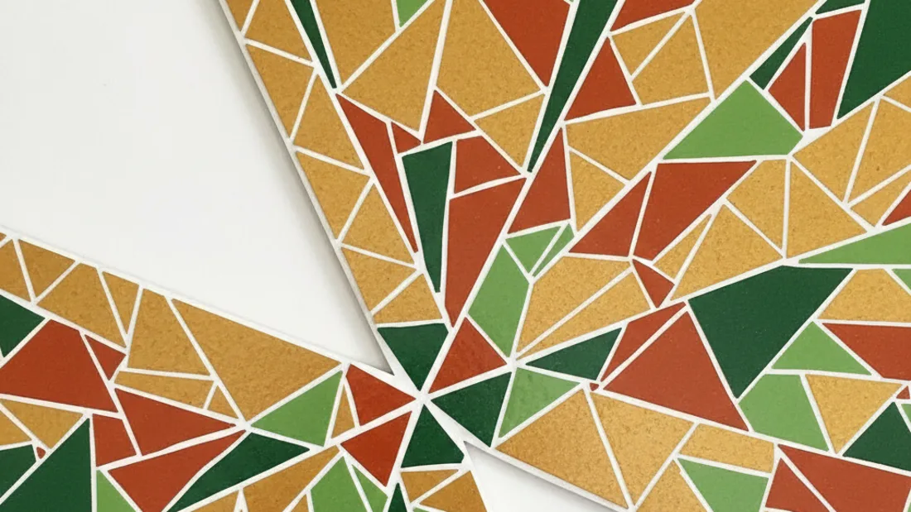

Work and recruitment
Access to employment
Questions about recruitment practices, criminal-record disclosure and the experience of looking for work after a long period of unemployment.
The MOSAIC approach
Find out what prevents access, involve the people affected and agree what needs to change.

Our focus
We’re interested in barriers that persist even when someone has taken a course, applied for work or asked for support. Research needs to explain where access breaks down and who can change it.
Work and recruitment
Questions about recruitment practices, criminal-record disclosure and the experience of looking for work after a long period of unemployment.
Technology and services
Questions about devices, connectivity, digital skills and what happens when essential services assume everyone can get online.
Skills and support
Questions about whether support connects people to opportunities, and which restrictions remain when a course or programme ends.
Place and opportunity
Questions about how location, transport and service availability affect the options available to families in deprived communities.
Proposed research process
Each project needs an agreed scope, a proportionate method and a clear decision it can inform.
Understand who is affected and what they want to change. Decide who needs to participate, how to include them and how their time will be recognised.
Use interviews, existing research and relevant public data. Where appropriate, seek information from public bodies. Explain what each method can and cannot establish.
Work with communities and organisations to propose a specific change. Agree responsibilities, resources and how to assess whether access improves.
Compare findings with the original question. Share the evidence, limits and changes needed before recommending wider use.
Research commitments
These commitments describe how we intend to run research. Each study will need its own consent process, data arrangements and safeguarding assessment before recruitment begins.
We’ll explain the purpose of the research, what taking part involves and how contributions may be used. Stories, quotations and identifying details require specific permission before publication.
We’ll agree how people affected can help develop the questions and interpret findings. The project plan should specify how participation is supported and how contributors receive the results.
Published findings should explain methods, the people included, gaps in the evidence and alternative explanations. A proposal, a pilot and an evaluated result will be labelled separately.
Each project should identify who is responsible for decisions, funding and delivery. We’ll seek permission before identifying a partner or using an organisation’s logo.